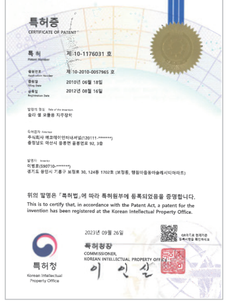
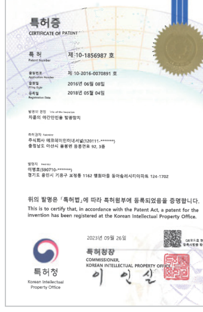

안내판 표시장치Information Display Device특허PDF p.5

솔라 셀 모듈용 지주장치Support Device for Solar Cell Modules특허PDF p.5
보안등 겸용 안내표시장치Security-Light Information Display Device특허PDF p.5

조명식 도로표시판 겸용 보조등Auxiliary Light for Illuminated Road Sign특허PDF p.5

조명식 도로표시판 겸용 보조등을 위한 지지장치Support Device for the Auxiliary Light특허PDF p.5

차륜의 야간안전용 발광장치Nighttime Safety Illuminator for Wheels특허PDF p.5

전원 소모 저감 기능이 구비된 도로표지병Power-Saving Road Stud특허PDF p.5

가로등 지주에 설치되는 공공 서비스 편의 시스템Public Service Convenience System on Streetlight Poles특허PDF p.5
조명장치Lighting Device특허PDF p.5

도로 표지병의 제어 장치Road-Stud Control Device특허PDF p.5

도로표지병Road Stud특허PDF p.5
도로안내 표지판Road Sign디자인등록PDF p.5

볼라드Bollard디자인등록PDF p.5
도로안내 표지판Road Sign디자인등록PDF p.5

도로표지병Road Stud디자인등록PDF p.5

델리네이터Delineator디자인등록PDF p.5

델리네이터Delineator관련디자인등록PDF p.5
델리네이터Delineator관련디자인등록PDF p.5